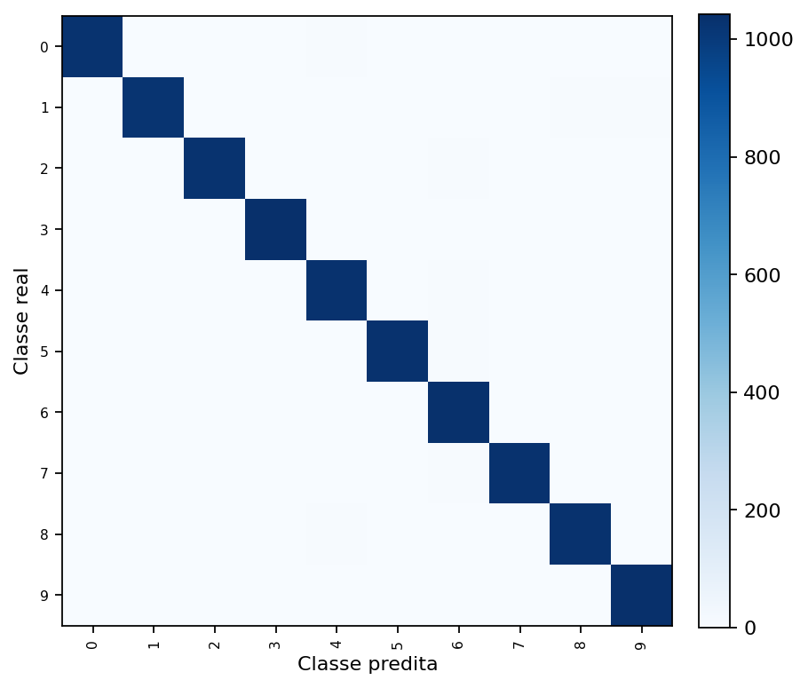
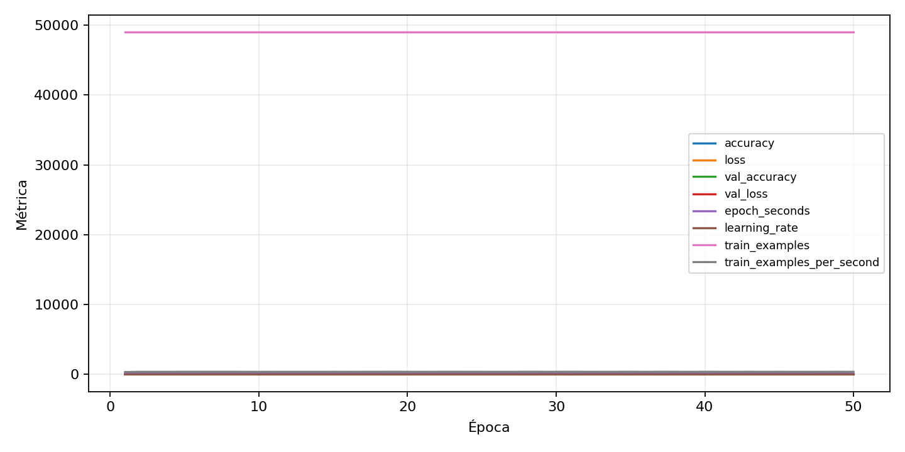

| n_samples | 10500 |
|---|---|
| loss | 0.08111200481653214 |
| accuracy | 0.9843809523809524 |
| balanced_accuracy | 0.9843809523809524 |
| macro_f1 | 0.9843853176679179 |


| Índice | Classe | Suporte | Precisão | Recall | F1 |
|---|---|---|---|---|---|
| 0 | 0 | 1050 | 0.9903846153846154 | 0.9809523809523809 | 0.985645933014354 |
| 1 | 1 | 1050 | 0.9884281581485053 | 0.9761904761904762 | 0.9822712026832773 |
| 2 | 2 | 1050 | 0.9809523809523809 | 0.9809523809523809 | 0.9809523809523809 |
| 3 | 3 | 1050 | 0.9867549668874173 | 0.9933333333333333 | 0.9900332225913622 |
| 4 | 4 | 1050 | 0.9763705103969754 | 0.9838095238095238 | 0.9800759013282733 |
| 5 | 5 | 1050 | 0.9904122722914669 | 0.9838095238095238 | 0.987099856665074 |
| 6 | 6 | 1050 | 0.9709193245778611 | 0.9857142857142858 | 0.9782608695652174 |
| 7 | 7 | 1050 | 0.9875835721107927 | 0.9847619047619047 | 0.9861707200762994 |
| 8 | 8 | 1050 | 0.9885167464114832 | 0.9838095238095238 | 0.9861575178997612 |
| 9 | 9 | 1050 | 0.9839167455061495 | 0.9904761904761905 | 0.9871855719031799 |
{"adapter":"kmnist","balance_mode":"all_raw","class_names":["0","1","2","3","4","5","6","7","8","9"],"dataset":"kmnist","dataset_options":{},"dataset_root":"/home/msduda/datasets-tcc/kmnist","native_channels":1,"normalization":"unit_interval","num_classes":10,"protocol":{"checkpoint_monitor":"val_macro_f1","dtype_policy":"mixed_float16","early_stopping":{"patience":50,"restore_best_weights":true},"evaluation_augmentation":false,"input_channels":"native","optimizer":"Adam","pretrained_weights":false,"reduce_lr_on_plateau":{"factor":0.3,"min_lr":1e-07,"patience":50},"resize":"proportional_padding","test_time_augmentation":false,"training_from_scratch":true},"seed":42,"source_fingerprint":"8928d478d8d23938a73b4f4a92c407bf3d74beff1e0e67e3644d6ecdc30cf828","source_manifest":{"class_names":["0","1","2","3","4","5","6","7","8","9"],"joined_samples":70000,"metadata":{"layout":"kmnist-component-npz"},"name":"kmnist","native_channels":1,"source_path":"/home/msduda/datasets-tcc/kmnist","splits":{"test":10000,"train":60000},"target_size":64},"target_size":64,"test_fraction":0.15,"train_fraction":0.7,"training":{"augmentation":{"brightness_delta":0.0,"contrast_lower":1.0,"contrast_upper":1.0,"cutout_max_frac":0.0,"cutout_prob":0.0,"flip_lr":false,"noise_std":0.0,"translate_frac":0.0,"zoom_max":1.0,"zoom_min":1.0},"batch_size":32,"default_image_size":64,"dtype_policy":"mixed_float16","early_stopping_patience":50,"extra_fraction":0.0,"image_size_overrides":{"gtsrb":128},"keras_verbose":1,"learning_rate":0.0003,"max_epochs":50,"preprocess_cache_max_mib":0,"reduce_lr_factor":0.3,"reduce_lr_min_lr":1e-07,"reduce_lr_patience":50,"shuffle_buffer_max_mib":0},"validation_fraction":0.15}
{"epochs_completed":50,"epochs_recorded":50,"evaluation_seconds":44.86209367799893,"fit_seconds_current_attempt":8136.230829798,"max_epoch_seconds":148.4810769070009,"max_epochs":50,"mean_epoch_seconds":133.8528105471401,"mean_train_examples_per_second":366.17701986959196,"median_train_examples_per_second":367.10943528146737,"min_epoch_seconds":130.90237104000335,"selected_checkpoint":"/mnt/e/tcc-benchmark/outputs/kmnist-alldata-noaug-batch-sweep-2026-08-06/batch-032/kmnist/runs/kmnist__unit_interval__all_raw__seed-42/checkpoints/best.keras","total_seconds":6692.640527357005,"training_seconds":6692.640527357005,"wall_seconds_current_attempt":8185.863615581999}
{"elapsed_seconds":8185.910615871999,"event_counts":{"data_preparation_end":1,"data_preparation_start":1,"epoch_end":50,"evaluation_end":1,"evaluation_start":1,"fit_end":1,"fit_start":1,"periodic":1612,"run_completed":1,"train_start":1},"generated_at":"2026-08-06T09:55:21.408+00:00","gpu_backend":"pynvml","interval_seconds":5.0,"metrics":{"cpu_percent":{"count":1670,"max":16.4,"mean":11.223712574850298,"min":0.0,"p50":10.2,"p95":15.6},"disk_data_free_bytes":{"count":1670,"max":998270369792.0,"mean":998270309705.8875,"min":998270300160.0,"p50":998270308352.0,"p95":998270312448.0},"disk_data_percent":{"count":1670,"max":2.7,"mean":2.7,"min":2.7,"p50":2.7,"p95":2.7},"disk_data_total_bytes":{"count":1670,"max":1081101176832.0,"mean":1081101176832.0,"min":1081101176832.0,"p50":1081101176832.0,"p95":1081101176832.0},"disk_data_used_bytes":{"count":1670,"max":27838521344.0,"mean":27838511798.112576,"min":27838451712.0,"p50":27838513152.0,"p95":27838513152.0},"disk_output_free_bytes":{"count":1670,"max":173504155648.0,"mean":173483304192.30658,"min":173474222080.0,"p50":173482840064.0,"p95":173490716672.0},"disk_output_percent":{"count":1670,"max":82.7,"mean":82.7,"min":82.7,"p50":82.7,"p95":82.7},"disk_output_total_bytes":{"count":1670,"max":1000186310656.0,"mean":1000186310656.0,"min":1000186310656.0,"p50":1000186310656.0,"p95":1000186310656.0},"disk_output_used_bytes":{"count":1670,"max":826712088576.0,"mean":826703006463.6934,"min":826682155008.0,"p50":826703470592.0,"p95":826711378124.8},"elapsed_seconds":{"count":1670,"max":8185.851867,"mean":4095.9420570976044,"min":0.034542,"p50":4093.7495655000002,"p95":7794.79934375},"gpu_count":{"count":1670,"max":1.0,"mean":1.0,"min":1.0,"p50":1.0,"p95":1.0},"gpu_memory_percent":{"count":1670,"max":51.80926322937012,"mean":51.13133356242837,"min":48.296356201171875,"p50":51.61929130554199,"p95":51.74517631530762},"gpu_memory_total_bytes":{"count":1670,"max":8589934592.0,"mean":8589934592.0,"min":8589934592.0,"p50":8589934592.0,"p95":8589934592.0},"gpu_memory_used_bytes":{"count":1670,"max":4450381824.0,"mean":4392148109.02994,"min":4148625408.0,"p50":4434063360.0,"p95":4444876800.0},"gpu_temperature_c":{"count":1670,"max":49.0,"mean":42.55808383233533,"min":36.0,"p50":42.0,"p95":48.0},"gpu_utilization_percent":{"count":1670,"max":94.0,"mean":27.595209580838322,"min":1.0,"p50":34.0,"p95":41.0},"process_cpu_percent":{"count":1670,"max":193.9,"mean":137.45814371257487,"min":0.0,"p50":123.9,"p95":191.5},"process_read_bytes":{"count":1670,"max":17170432.0,"mean":17111559.971257485,"min":7933952.0,"p50":17170432.0,"p95":17170432.0},"process_rss_bytes":{"count":1670,"max":4056215552.0,"mean":3810190962.663473,"min":1029836800.0,"p50":3963031552.0,"p95":4040429568.0},"process_vms_bytes":{"count":1670,"max":50041552896.0,"mean":49727911084.91497,"min":39580233728.0,"p50":49890045952.0,"p95":50040504320.0},"process_write_bytes":{"count":1670,"max":1343488.0,"mean":1335632.0191616768,"min":4096.0,"p50":1343488.0,"p95":1343488.0},"ram_available_bytes":{"count":1670,"max":15518404608.0,"mean":12898192419.564072,"min":12654407680.0,"p50":12743557120.0,"p95":13559328153.6},"ram_percent":{"count":1670,"max":23.9,"mean":22.38568862275449,"min":6.6,"p50":23.3,"p95":23.8},"ram_total_bytes":{"count":1670,"max":16619081728.0,"mean":16619081728.0,"min":16619081728.0,"p50":16619081728.0,"p95":16619081728.0},"ram_used_bytes":{"count":1670,"max":3964674048.0,"mean":3720889308.4359283,"min":1100677120.0,"p50":3875524608.0,"p95":3953525145.6}},"sample_count":1670,"schema_version":1}